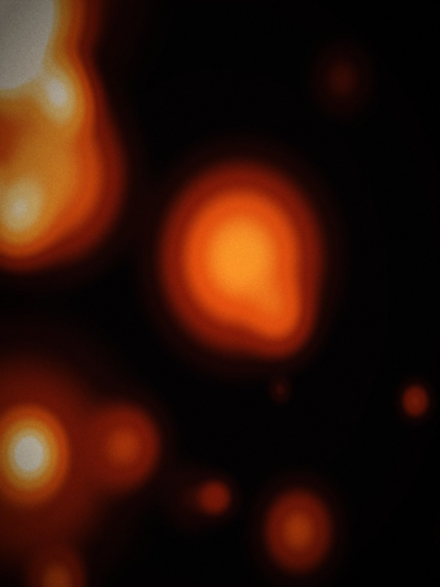
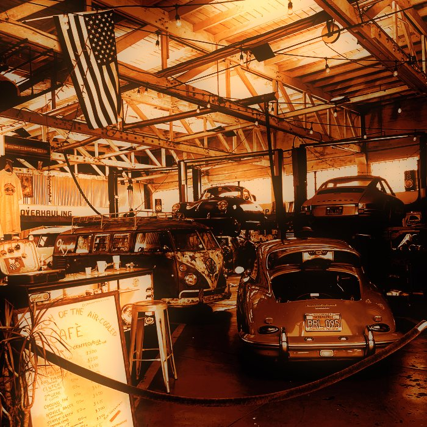
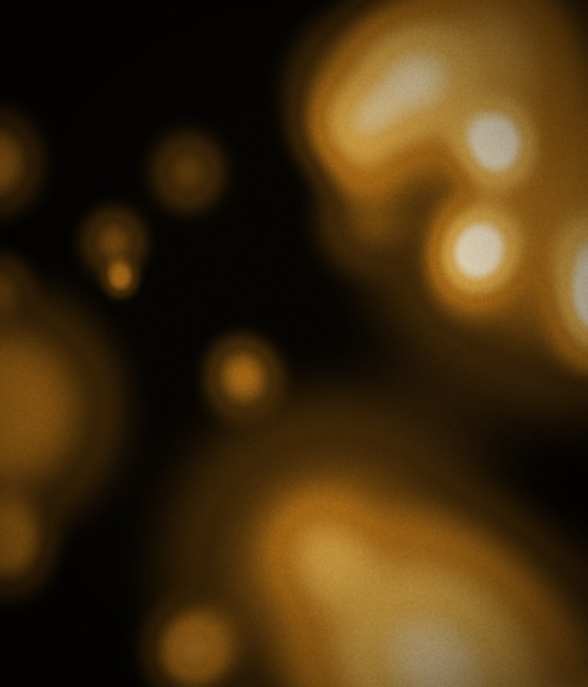

Three verdicts on every recurring task
Every verdict comes with the reason, so you can disagree with it.
Every token, component, state, page section and animation used on variant G, rendered live from
../site.css, the same stylesheet the page loads.
Change a token there and this page changes with it. If a component is not on this page, it does not exist yet:
add it here first, then use it.
Two grounds and one accent. Black is the page, paper is the relief, and the ember is the only hue that ever appears. Grey is a step between white and the ground, never a fourth colour. The accent is never used for body text, only for a mark, a highlight or a hover.
The page ground. Every section that is not paper sits on this.
Relief ground for the sectors band, and the fill of the light button.
The card surface. Slightly warm so it is not a flat white against paper.
The one inverted card in the grid. Not black, so it reads as a surface.
The accent. The image grade, the AI circle label, the footer mark.
Hover and focus only. Never a resting colour.
Behind an image that has not loaded, so the gap is never grey.
The dimmed first half of the statement. Not for body copy.
Labels and captions on paper.
The blurred footer wordmark, and nothing else on the site.
Two families. Inter carries everything, set in caps and heavy for display and in sentence case for reading. Yellowtail appears exactly once, on the greeting above the statement. There is no decorative first letter anywhere; that treatment was removed on purpose.
Four radii, two easing curves, one shell width. A radius is chosen by what the element is, never by eye.
--r · 22pxCards, the nav pill container, the footer plate uses 30px as the one exception.18pxEvery image: sector cards, news cards, the hero product shot.--r-sm · 14pxSmall framed media inside a card.999pxButtons, chips, circles. The default control shape on this variant.--easecubic-bezier(.2,.7,.3,1). Everything that enters or responds.--slidecubic-bezier(.66,0,.2,1). Image scale and the longer moves.--shellmin(93vw, 1680px). Every section starts on this edge.touch floor44px minimum height on anything interactive at a touch width.Every control in every state. Hover, active and focus are rendered with a
data-state attribute that mirrors the real pseudo-class, so what you see here is the
same declaration the page uses, not a copy of it.
Two cards and one plate. The card grid is three columns; a card may span two. Nothing carries a drop shadow on the dark ground; on paper a single soft shadow separates an image from the white.
Every verdict comes with the reason, so you can disagree with it.
In writing, within a week.
Get the breakdownThree ways this variant shows a number. Each is a real figure from the page, not a decoration: a proportion, a schedule and a price. None of them animate their digits.
One off, no commitment.
All imagery is generated or graded to one ember ramp at build time, never with a CSS
filter. Every image wrapper is display:block with isolation:isolate, because an
inline wrapper does not clip its corners and every image on this page once rendered square because of it.

AI

Three kinds, kept apart on purpose. First load runs once when a block is
first seen and then stops. Loop never stops while the element is on screen. Hover
is pointer-driven and is always a different gesture from the loop, so pointing at something never
looks like the thing it was already doing. Only transform and opacity
animate; everything is inside prefers-reduced-motion: no-preference, and under
reduce nothing arms and every element renders at its final state.
Effective automation
for real businesses
+ Where to start with AI?
The nine blocks the page is made of, in order, each with the one job it does. A section that cannot be described in a single sentence does not belong on the page.
Full-bleed graded photograph, fixed bar over it, the claim bottom-left and the supporting block bottom-right. The only place the headline runs above 40px.
Five cards over three columns carrying the argument as facts: the three verdicts, the proportion, the free breakdown, the schedule, the price. This is where the load animation lives.
One sentence, centred, greeting above it. Grey resolves to white so the emphasis lands on the second half.
Five overlapping circles naming the scale, with the accent circle in the middle. A picture of the argument, not a control.
The relief band on paper. A horizontal slider of sector cards that always overflows, so the next card is visibly cut.
Five staggered cards on black with a label over each, and a slider bar beneath.
Tall rounded plate, the red wordmark blurred across it and bleeding off both edges, with the links laid over the lower half.
Full-screen overlay under 900px. Focus trapped, scroll locked, Escape closes and returns focus to the burger.
Every token and component in every state, from the same stylesheet. New component goes here first.
Decisions already made, so they do not get remade by accident.
The script first-letter treatment was removed from every heading. Yellowtail is for the greeting and nothing else.
Inter and Yellowtail. A monospace look is achieved with tabular numerals, not another font.
One ember. The footer red is a single documented exception on one element.
The grade is baked at build time. A runtime filter costs paint and still looks like a filter.
An inline span does not clip its corners. Every media wrapper is display:block.
Only transform and opacity. Never width, height, top, left or min-height.
Figures render at their value. The loader may sweep; the price may not tick.
Checked at 320, 360, 390 and 414. Desktop may go to 38px, never lower.